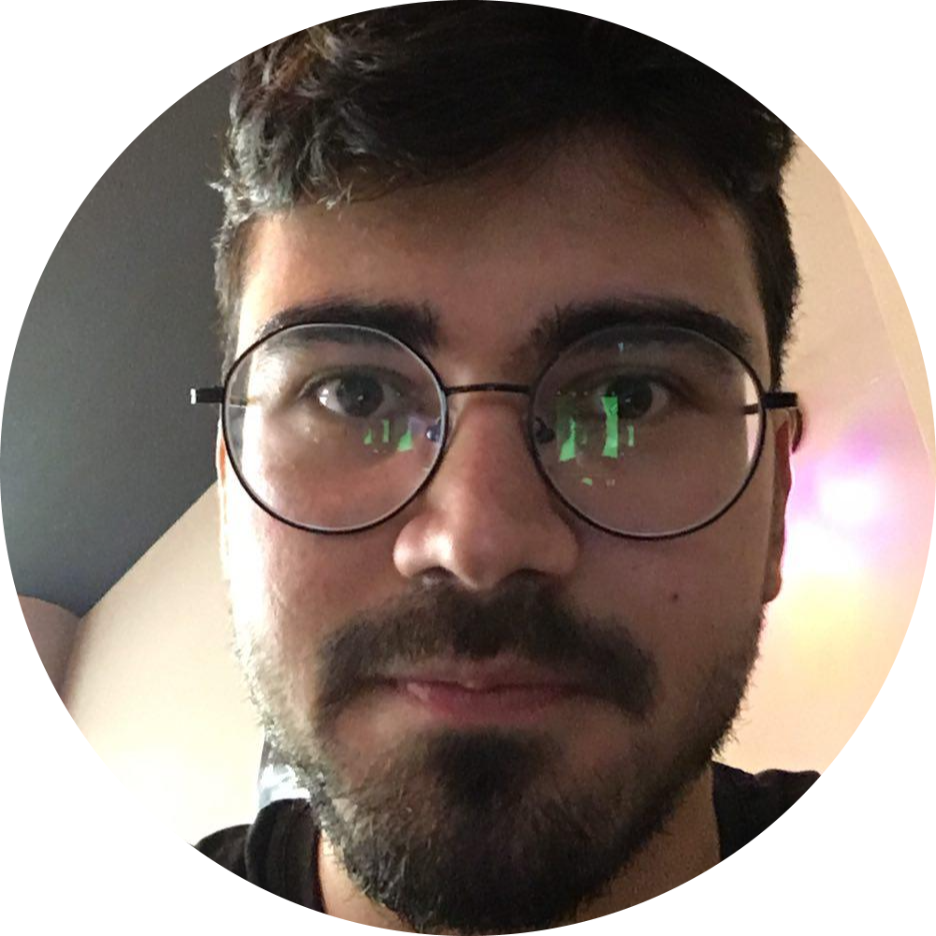

|
Oguz Altan
I am a Master's student at RWTH Aachen University in the department Electrical Engineering, Information Theory and
Computer Engineering, where I do my major in Systems and Automation Engineering, focus on AI applications in Robotics.
I did my Master's internship at Siemens in Munich, Germany. I've worked on Machine Learning and AI Integration
to Wire Arc Addivite Manufacturing, where I was advised by
Raven Thomas Reisch from TUM Chair of Robotics, Artificial Intelligence, and Embedded Systems. The title of internship was
Multivariate Anomaly Detection in Process Monitoring of Additive Manufacturing Applications.
I've received the Scholarship for Completing Studies for Students for the year 2022,
granted by RWTH Aachen International Office as part of the DAAD funding program STIBET I with
funds from the German Foreign Office. This 'Studienabschluss' scholarship funds the academic success of qualified international students, who are in the final phase of their studies.
Email /
CV /
Bio /
LinkedIn /
Github /
Google Scholar
|

|
|
Master's Thesis - Tracking and Evasion using Co-Training with Context Knowledge
I have started to work on my Master's Thesis titled Tracking and Evasion using Co-Training with Context Knowledge. I am working on deep reinforcement learning
and convolutional neural networks on autonomus systems. I am supervised by André Brandenburger and
Dr. Alexander Charlish
from Fraunhofer FKIE , in collaboration with
Chair of Information Theory and Data Analytics (INDA) at RWTH Aachen, managed by
Prof. Dr.-Ing. Anke Schmeink. .
Topic of the thesis is described below:
Our project contains a UAV and a ground-based platform, both of which are controlled by an autonomous policy.
While an observing platform has the goal to track a target with radar, the target platform is supposed to evade this tracking as well as possible.
This leads to conflicting objectives for the two agents, which are trained to dynamically counter each other.
This work has addressed simple, empty environments and an extension to a more complex environment may lead to even more interesting behaviours of the agents.
The goal of this thesis is to extend the existing Co-Training approach to an urban environment.
This environment should include buildings and roads, which will be passed to the RL agents
as scenario-specific context knowledge, e.g. using maps. Consequently, the observation model
of the agents will be extended with a CNN to utilize this context information.
Furthermore, different Reinforcement Learning architectures, such as model-based RL or Attention
Networks may be explored. In the end, the Co-Training should result in an equilibrium
between the two conflicting agents, where both agents utilize the unique features of the
urban environment to achieve their respective task. The final evaluation will include a comparison
to the model without context knowledge, such that the advantages of the approach
are clearly outlined.
Scholarship for Completing Studies for Students for the year 2022,
DAAD
|
|
Research
My special interests are machine learning, artificial intelligence, intelligent systems, robotics, control theory and signal processing. I have both research and application
oriented experiences supported by my educational background and internships.
|
|
{kind=link}